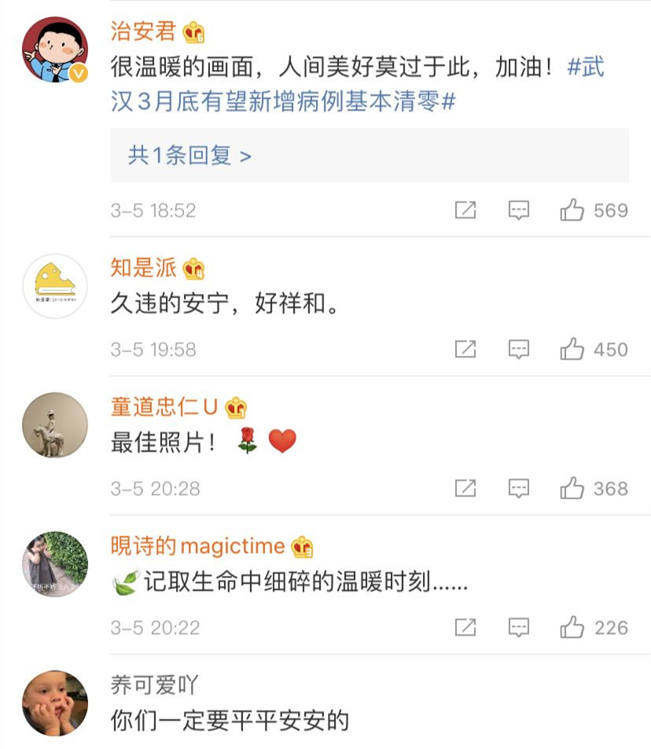

上海援鄂医疗队：我们不能治好肺炎就不管了
原文链接 备份链接 澎湃新闻记者 李佳蔚 郁斐 制图 进驻武汉第一天，上海医疗队就知道，要治愈的不仅是患者身体，治愈出院也不会是服务终点。 时至今日，事实证明他们做得不赖。 2月7日，上海中山医院第四批医疗队进驻武汉大学人民医院东院，整建 …
澎湃新闻记者 李佳蔚

上海复旦大学附属中山医院官方微博 图
3月5日，武大人民医院东院，上海复旦大学附属中山医院支援湖北医疗队队员刘凯医生在护送病人做CT的途中，停下来，让已经住院近一个月的87岁老先生欣赏了一次久违的日落。
落日余晖下的两个身影，病人和医生，这个温暖人心的瞬间被拍下来后，感动无数网友，被评为：今日最佳照片。


当天晚上，27岁的刘凯医生忙碌一天后回到房间，通过电话接受澎湃新闻记者采访，讲述了傍晚时分与老先生偶然欣赏夕阳的经过。
这位87岁的老先生入院时是重症患者，在上海医疗团队的救治下，目前身体情况已不断转好。今天下午四点多，刘凯推着他去做一个CT检查随访，在回病房的途中，和煦的夕阳恰好洒在病人和医生身上。
“我看老先生挺高兴的，就问他要不要看一会（夕阳），他说好。”于是两人停下来。
刘凯说，对于老先生而言，他已经一个月没有看到阳光。其实对他自己来说，每天早出晚归，一直待在病房，也很少看到太阳。所以当两人看到沐浴在夕阳下时，其实都挺高兴的。
“您觉得怎么样？”停下后，刘凯问老先生，后者答，“夕阳蛮好。”
看了三四分钟，刘凯知道这个老先生的病情还不稳定，室外温度不高，就推着他回到病房。刘凯说，回去后老先生心情很好，很快入睡休息了。
刘凯医生是中山医院第四批支援湖北医疗队队员，自2月7日起他们一直在武汉前线奋战。
上海医疗队刚去时，这位老先生病情很重，对所有人不理不睬。老先生的家人住的很远，武汉全城的交通停运，家人来送东西很不容易，中山医院医疗队便承包了所有的生活照料。
糕点、水果、各类生活用品、营养品，都送到老先生以及其他病人手中。20多天的相处下来，老先生不但病情越来越好，和医护人员的关系也越发融洽。
中山医院医疗团队负责的是武大人民医院东院20和22两个病区，患者皆是重症及危重患者。“现在绝大部分患者病情已经稳定下来，有一些患者已经出院。”刘凯说。
有个重症病人，最近已经转为轻症，马上要出院了，他就把所有医护人员的名字都记在了一张纸上。还有许多病人出院时告诉这些上海医护人员们：等疫情过去，请大家吃热干面。
戳这里进入
“全国新型冠状病毒感染病例实时地图”↓↓↓
本期编辑 周玉华
推荐阅读


原文链接 备份链接 澎湃新闻记者 李佳蔚 郁斐 制图 进驻武汉第一天，上海医疗队就知道，要治愈的不仅是患者身体，治愈出院也不会是服务终点。 时至今日，事实证明他们做得不赖。 2月7日，上海中山医院第四批医疗队进驻武汉大学人民医院东院，整建 …
原文链接 备份链接 方舱医院患者出院还是比较快的，这样周转起来，就可以接收大量的病人，可以做到“应收尽收”。 文 | 黄 祺 13天前，武汉新冠肺炎疫情仿如“暗夜”——社区还有大量感染者未能得到诊断，他们如果得不到及时的治疗，病情很可能 …
原文链接 备份链接 这是驰援武汉的复旦大学附属中山医院医疗队领队朱畴文的谈话录音，讲述了他和他的团队从抵达武汉，进驻医院到参与治疗过程的经历，在谈到武汉和武汉人时，他几度声音哽咽。关于防护物资、关于病人收治、关于疫苗、关于心理压力、关于 …
原文链接 备份链接 编者按： 本文作者刘韬滔为北京医院外科ICU主治医师，进入援鄂国家医疗队名单后，二月七日从北京去往武汉，进行医疗救助。 二月八日晚上九点坐大巴车从汉口驻地出发。半小时后进入蔡甸区，车在一路口红灯前停下。我转头望向窗外， …
原文链接 备份链接 方舱医院的建立，是整个武汉疫情最重要的转折点。通过有效运转、疏导，出舱病人越来越多，医疗资源后期迅速得到缓解。 早期对环境、条件诸多质疑、拒绝入舱的轻症患者，后来也慢慢开始接受方舱医院。 第六版诊疗指南公布后，核 …